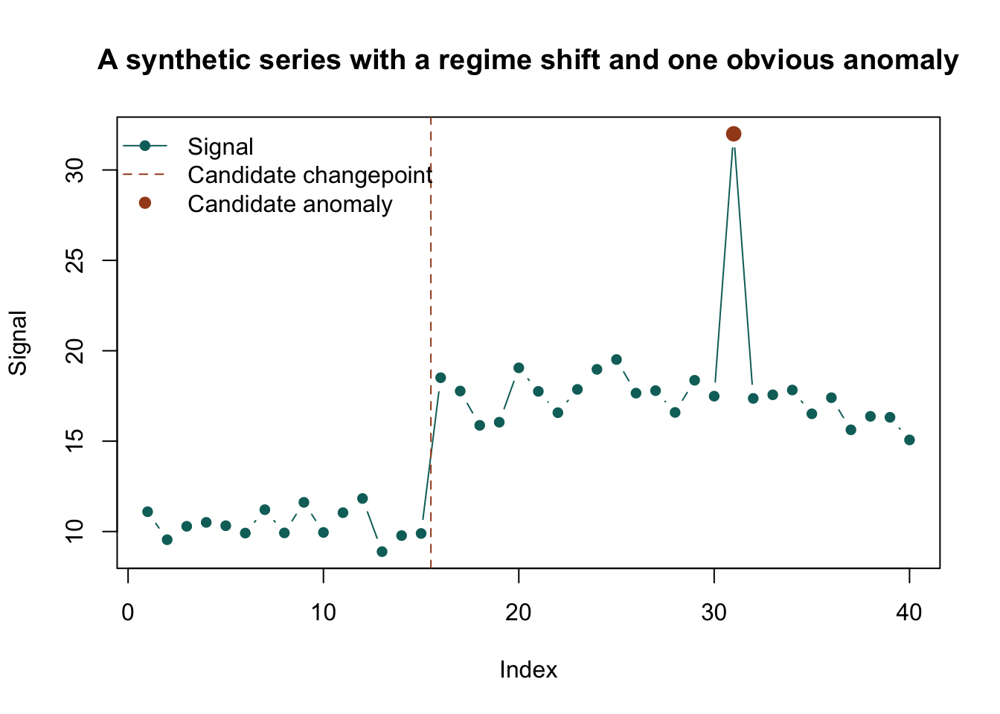

library(hipoint)
signal_df <- data.frame(
date = seq.Date(as.Date("2026-01-01"), by = "day", length.out = 30),
signal = c(rep(10, 10), rep(18, 10), rep(17, 10))
)
hipoint::chpts.detect_changepoints(
signal_df,
index = "date",
signal = "signal",
method = "intercept"
)
hipoint::outlier.detect_anomalies(
signal_df,
index = "date",
signal = "signal",
method = "mad"
)7 Specialist Packages
8 Two optional packages worth knowing early
Even though they are optional, hipoint and hisched are interesting enough that new employees should at least know what they are for.
8.1 hipoint: change points and anomalies
hipoint is useful when the core question is not “what is the average trend?” but rather:
- when did the regime change?
- which observations are suspicious?
- should this time series be treated as stable at all?
8.1.1 The package view
The package exposes:
outlier.detect_anomalies()chpts.detect_changepoints()
plus several specific methods under the hood.
8.1.2 Example
8.1.3 A visual intuition
set.seed(42)
signal_df <- data.frame(
idx = 1:40,
signal = c(rnorm(15, mean = 10, sd = 0.8), rnorm(15, mean = 18, sd = 0.8), 32, rnorm(9, mean = 17, sd = 0.8))
)
plot(
signal_df$idx,
signal_df$signal,
type = "b",
pch = 16,
col = "#0b6e69",
xlab = "Index",
ylab = "Signal",
main = "A synthetic series with a regime shift and one obvious anomaly"
)
abline(v = 15.5, lty = 2, col = "#a44a1f")
points(31, signal_df$signal[31], pch = 19, col = "#a44a1f", cex = 1.3)
legend(
"topleft",
legend = c("Signal", "Candidate changepoint", "Candidate anomaly"),
col = c("#0b6e69", "#a44a1f", "#a44a1f"),
lty = c(1, 2, NA),
pch = c(16, NA, 19),
bty = "n"
)
8.1.4 Try it
- Create a series with one level shift and one outlier.
- Run both
chpts.detect_changepoints()andoutlier.detect_anomalies(). - Compare whether the methods agree with your visual intuition.
8.1.5 Stretch
Take a real business metric that should be fairly stable. Ask:
- what counts as drift?
- what counts as a one-off anomaly?
- what should trigger human investigation?
8.2 hisched: heuristic scheduling and timetable improvement
hisched is optional because it is domain-specific, but it is one of the more substantial specialist packages in the ecosystem. It is recent, large, and well tested.
8.2.1 What it is for
hisched helps build and improve schedules, especially in school or timetable contexts where:
- teacher constraints matter
- student clashes matter
- feasible is not the same as optimal
- fast improvement heuristics are more practical than exact global optimisation
8.2.2 The package workflow
flowchart LR
A["Enrollments"] --> B["make_schedule_problem()"]
C["Scheduler inputs"] --> B
B --> D["create_initial_schedule()"]
D --> E["score() / validate()"]
E --> F["do_annealing()"]
F --> G["repair_sequence()"]
G --> H["export or inspect"]8.2.3 Example with the package sample data
library(hisched)
problem <- hisched::make_schedule_problem(
enrol = hisched::enrol_sample,
sched_input = hisched::sched_input_sample,
target_date = as.Date("2026-01-12"),
school = "IEB",
phase = "FET"
)
problem <- hisched::create_initial_schedule(problem)
problem <- hisched::score(problem)
problem <- hisched::validate(problem)8.2.4 Why this package is interesting even if you never schedule timetables
It is a good example of:
- heuristic search
- simulated annealing
- scoring design
- balancing feasibility against improvement
That makes it worth reading as an engineering package, not only a domain package.
8.2.5 Try it
- Read the
hischedREADME and map the main stages of the algorithm. - Load the sample data.
- Identify which objects are inputs, which are state, and which are outputs.
8.2.6 Stretch
Suppose a stakeholder says:
“We do not need the globally best schedule. We need a clearly better schedule by tomorrow, and we need to understand why it improved.”
Write a short note explaining why a heuristic package like hisched may be a better fit than a purely exact optimizer.
8.3 Think
What do hipoint and hisched have in common?
They both help in settings where the real problem is not just prediction. It is decision support under imperfect structure.